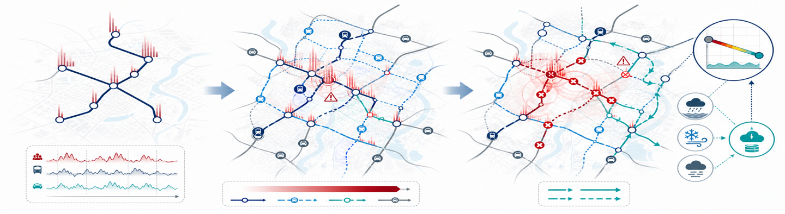
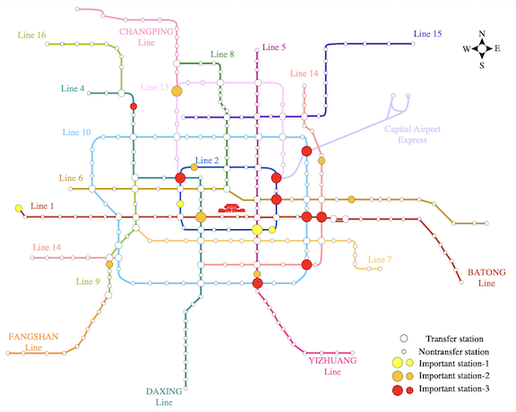
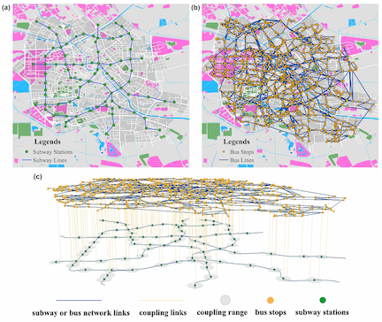
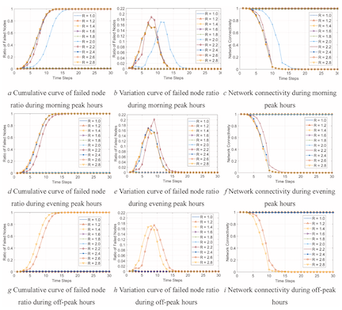
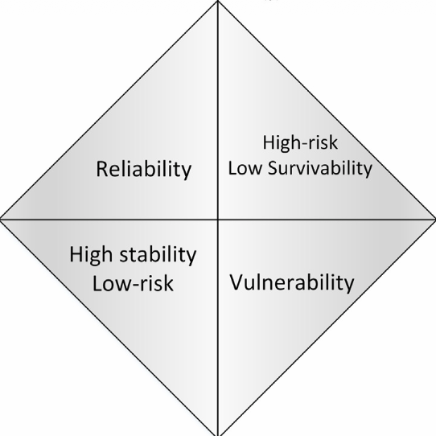
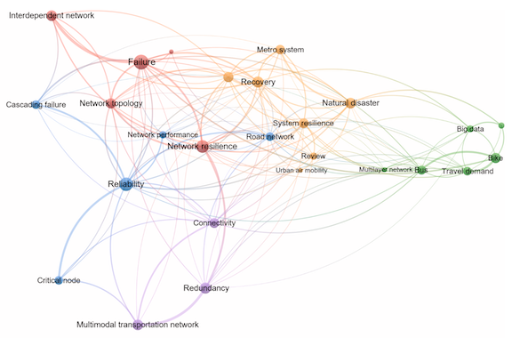
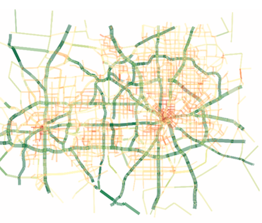

Transportation Resilience: Dynamic Demand and Multimodal Networks
Overview
Transportation systems are essential to urban mobility and socioeconomic activity, yet they are increasingly exposed to operational disruptions, infrastructure failures, extreme weather, and rapidly changing travel demand. Understanding their vulnerability, i.e., how and to what extent system performance deteriorates under disturbances, and their resilience, i.e., the ability to withstand, adapt to, and recover from such disturbances, is therefore critical for identifying weak components, anticipating system-wide impacts, and developing effective mitigation and recovery strategies.

Our work on transportation vulnerability and resilience centers on dynamic travel demand and single- and multimodal networks:
- We developed demand-aware methods for evaluating network vulnerability, resilience, and disruption dynamics. We first examined how time-varying passenger demand shaped the dynamic vulnerability of a single-mode urban rail transit network[1]. We then extended this perspective to multimodal transportation networks by integrating network structure, minute-level dynamic demand, travel behavior, and demand redistribution[2]. Furthermore, we modeled how disruptions propagated within interdependent transportation networks through cascading failures, accounting for both intramodal and intermodal dynamics[3].
- We provided systematic reviews of transportation vulnerability and resilience research. One study synthesized the concepts, metrics, and analytical methods used across different transportation modes and system structures[4]. The other focused specifically on multimodal urban transportation networks and organized the literature around network modeling, resilience evaluation, and resilience optimization[5].
- We explored data-driven measurement of transportation resilience under real-world disruptions by fusing multiple crowdsourced datasets to quantify link-level traffic resilience to floods, winter storms, and fog, and to reveal how resilience varied with roadway and traffic characteristics[6].
Publications





